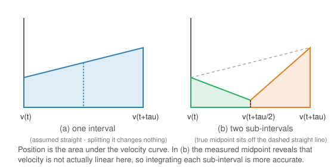

Navigators
| This documentation was generated with the assistance of AI. Please report any inaccuracies. |
The com.irurueta.navigation.inertial.navigators package implements the precision strapdown inertial
navigation equations described in Groves §5.4 (see [book-groves]):
given the previous navigation solution (attitude, velocity, position) and a new IMU measurement
(specific force + angular rate, averaged over the update interval), each navigator computes the next
navigation solution. This is the forward, integrating counterpart of the
kinematics estimators, which solve the inverse problem.
The navigation loop
Unlike the simplified, first-order equations shown in Groves §5.1-§5.3 (small-angle attitude update, first-order Coriolis/transport-rate terms), every navigator in this package implements the precision form from §5.4: attitude increments use the exact Rodrigues' rotation formula (no small-angle truncation), and the specific force is transformed using the averaged coordinate transformation matrix over the update interval rather than just the matrix at one end of it.

Classes
| Class | Resolving frame | Notes |
|---|---|---|
|
ECI (inertial) |
Simplest: no Earth-rotation or transport-rate terms; gravitation only (no centrifugal term). |
|
ECEF (rotates with the Earth) |
Adds the Earth-rotation (Coriolis + attitude) term; gravity includes the centrifugal component. |
|
Local navigation (north, east, down) |
Adds the further transport-rate term from moving across the Earth’s surface; position is curvilinear (latitude, longitude, height) rather than Cartesian. |
|
— |
Thrown when navigation fails due to numerical instabilities (e.g., an invalid rotation matrix). |
See Precision Navigation Equations for the full equations of each navigator.
The IMU measurement itself (fx/fy/fz, angularRateX/Y/Z) is always resolved about
body-frame axes for all three navigators — NED is not required as the resolving frame. Choosing
NEDInertialNavigator versus ECEFInertialNavigator/ECIInertialNavigator only decides which frame the
output position, velocity, and attitude are resolved in; pick whichever matches what the rest of your
application (or your GNSS/GPS input) already uses, and convert between them if needed (see
com.irurueta.navigation.frames frame converters) rather than assuming NED is mandatory.
|
|
Separately, the body-frame axes of |
Where to go next
-
Precision Navigation Equations — detailed equations for each frame.
-
Kinematics Estimators — the inverse problem (known trajectory to synthetic IMU measurements).
-
reference.adoc#bibliography — bibliography.